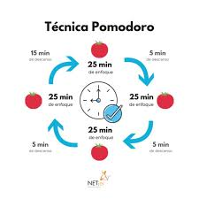
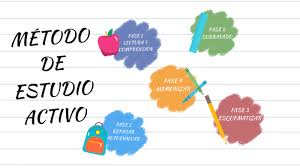

Método Feynman
Desarrollado por el físico Richard Feynman, este método se basa en la idea de que para entender un concepto, debes ser capaz de explicarlo en términos simples.
- Elige un tema.
- Escribe lo que sabes.
- Identifica las lagunas en tu conocimiento.
- Utiliza analogías y simplifica.
- Revisa y repite.
Método Pomodoro
El Método Pomodoro es una técnica de gestión del tiempo que utiliza intervalos de trabajo separados por breves descansos.
Estudio Activo
Este método involucra la práctica de recuperar información y aplicar lo aprendido en lugar de solo leer o escuchar.
Resumen
Realizar resúmenes de lo aprendido ayuda a consolidar la información y recordar mejor los conceptos clave.